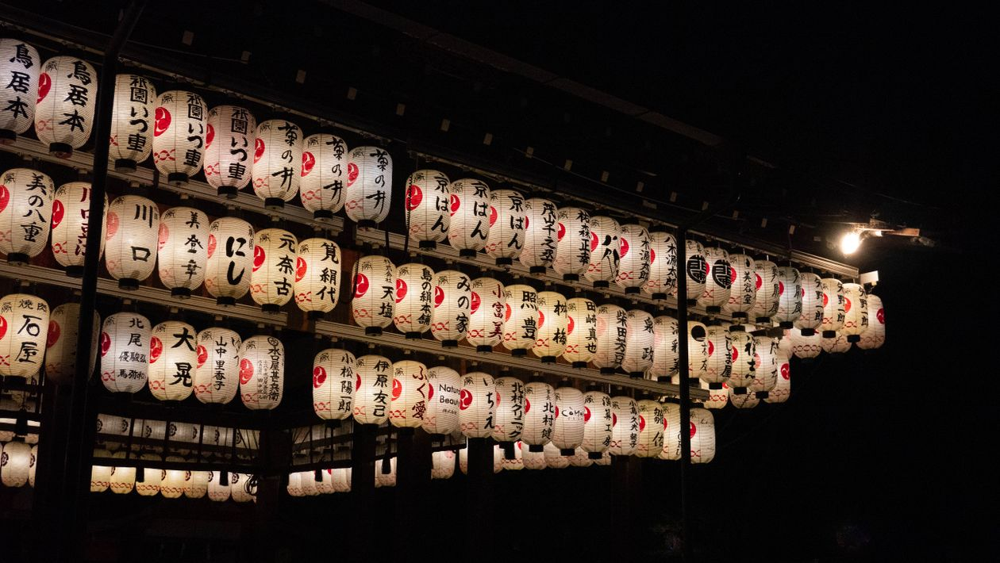

Sato Kenji, 47
Born in Kurume, thirty kilometres south, where my uncle kept a stall outside the station for thirty years. I built this cart with him in the winter of 2011 — his hands on the frame, mine on the griddle plates — and I have worked Fukuoka's festival circuit ever since: Dontaku in May, Yamakasa in July, Hōjōya in September, and private grounds in between.
A yatai is a kitchen the size of a wardrobe that folds out of a cart and feeds a street. Everything I own for work — two griddles, the corn grill, four lanterns, the noren (the split curtain that gives a stall its face) — rides on one cart and sets up in ninety minutes. What I sell is three dishes. What I actually sell is being there, lit and ready, before the crowd believes the festival has started.

You do not rent a pitch. You are trusted with one.
Every festival pitch is allocated by the festival's own association or shrine office — you apply in winter for the summer festivals, with your menu, your cart measurements and your food-handling licence (a prefectural street-stall permit — roten eigyō — renewed and inspected). The association walks the street, marks the pitches in chalk, and a good record is worth more than a good application: my Yamakasa pitch has been renewed on the strength of the chalk sell-out board and a clean pitch at pack-down, every year.
What a pitch costs
Fees run ¥18,000–¥45,000 a night depending on the festival and the street — Hōjōya's shrine approach at the top, a school festival ground at the bottom, where I charge the ground nothing and take it in trade for the year. On top of the fee: gas, ingredients, and the rule that you leave the ground cleaner than the chalk found it.
Gas and power, the unglamorous page
Two 8 kg propane cylinders on the cart, never more; a third lives in the van, not at the pitch. Fire extinguisher within arm's reach, one metre of clear ground behind the griddles, and the cylinders shaded from the lanterns' heat. Power for light comes from the festival's shared supply where there is one — lanterns and one string of bulbs only; the griddles are gas, so a power cut darkens my neighbours and merely dims me. Generators, where allowed at all, sit behind the cart with the exhaust pointed at nobody's dinner.
Hour by hour
05:30 — Yanagibashi market. Octopus, cabbage, corn in the husk. What the market is short of, the menu is short of; I do not substitute silently.
09:00 — Sauce made (it keeps a week, and improves). Corn husked back and tied. Noodles counted into pans of six portions.
14:00 — Batter mixed — half of it. The other half is mixed at noon service, fresh; batter that has stood five hours makes heavy balls. (This is the Dontaku rule. It cost ¥61,000 to learn.)
16:30 — Cart on the pitch. Level first — a griddle off level pools the oil and burns one side of every ball.
18:00 — Lanterns lit. Noren up. Brush in the sauce pot.
Close — Sell-out times chalked on the board, pitch swept, cylinders off and capped, takings counted against the prep planner's expectation. If the two numbers argue, I find out why before the next night.
The brush, one more time
People ask why I will not use a squeeze bottle; it is faster. It is. It also lays a cold stripe of sauce across a hot ball and calls it done. The hake (brush) paints sauce into every curve, the aonori sticks to it, and the ball looks like the picture in the customer's head. Fourteen seasons, and I have never once been in so much hurry that a stripe would do.
Rain is a cost, not a surprise
Festivals do not cancel for rain; crowds just thin. So the stall plans for it in writing: corn and unopened noodle packs carry to the next night; opened batter and cut cabbage do not, and are written off the same evening — never served tired to make the money back. If a private hire is rained off with 48 hours' notice, the date moves once, free. Inside 48 hours, the ingredients are already bought, and we talk honestly about what they cost. The full story of the wettest day is on the Festivals page, figures and all.